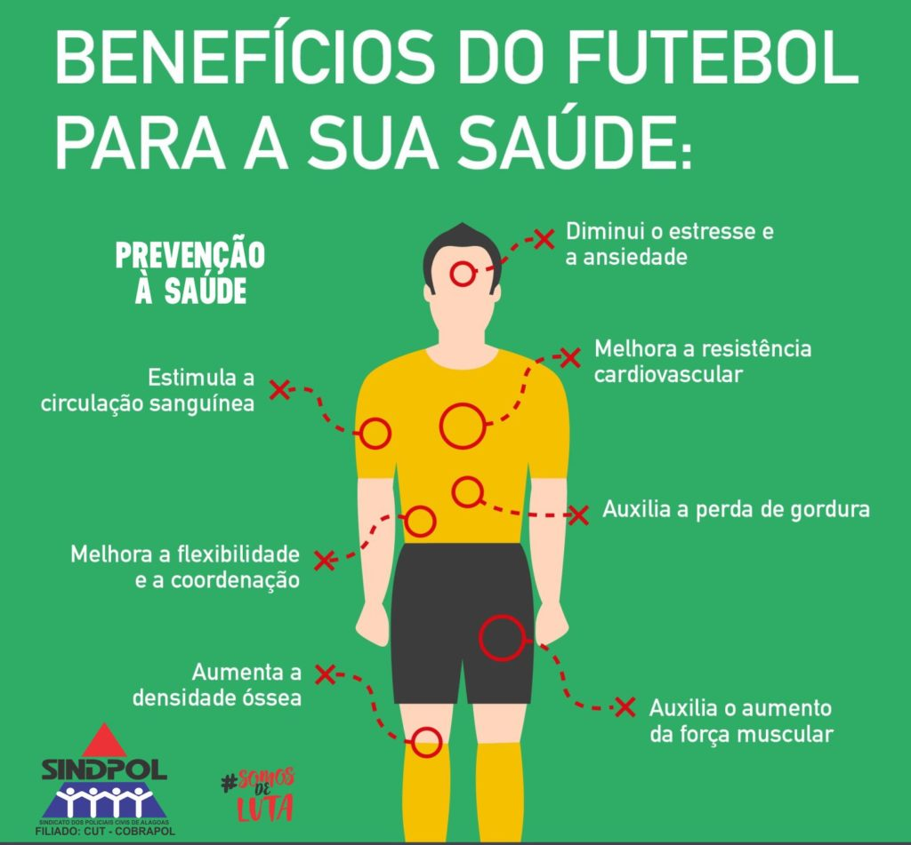

O futebol é um esporte que é considerado a paixão nacional e, sem duvida, o mais popular do mundo, começou a ser praticado ma Inglaterra, no século XVII
De acordo com os educadores físicos do Hospital Albert Einstein, a prática do futebol auxilia no aumento da capacidade cardiorrespiratória e potência aeróbica. O esporte também fortalece a musculatura, especificamente da coluna e das pernas.
